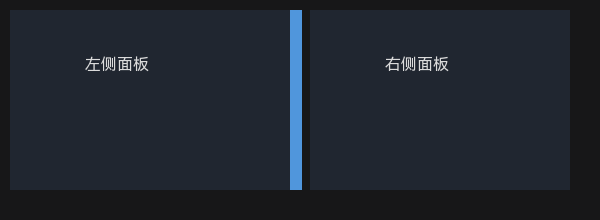

14 容器与布局控件
容器决定子控件放在哪里、如何随父级变化。先在画布上搭好容器关系，再放置表单和列表，通常比先堆控件再改父级更稳定。
14.1 面板 Panel
- 用途：分组、卡片、侧栏、表单区域，也是最常用的通用容器。
- 放置：从工具箱拖入 Panel，再向 Panel 内容区拖入子控件。
- 常用属性：背景色、边框、内边距、是否裁剪子控件（
clip-children）。 - 布局：子控件可设置锚点；需要多层嵌套时控制好每层的内容区尺寸。
如果子控件超出 Panel 却仍然显示，检查
clip-children 和父链上的面板设置；设计画布与预览可能因裁剪路径不同出现差异。14.2 窗口 WinFrame
| 项目 | 说明 |
|---|---|
| 用途 | 带标题栏/边框的窗口式容器，适合模拟独立窗口或面板组 |
| 子控件位置 | 挂到客户端内容区，坐标相对内容区而不是整个窗口边框 |
| 常用属性 | 标题、标题栏高度、背景、边框、阴影、关闭按钮行为（以 schema 为准） |
| 注意 | 标题栏本身通常不作为普通内容区放置子控件；内容布局要扣除标题栏高度 |
14.3 分割条 Splitter

图 14-1 Splitter 分隔左右两个 Panel；拖动中间蓝色把手调整比例
Splitter 用来在左右或上下两个区域之间提供可拖动的分隔条。它不是普通装饰线：需要指定方向、关联两侧容器，并在布局中占据实际空间。
14.3.1 在 Designer 中搭建
- 先放置两个 Panel（或其它容器），例如
leftPanel和rightPanel，并设置好初始位置/尺寸。 - 在两者之间放置 Splitter，调整宽度和高度；左右分栏时高度与两侧 Panel 对齐，上下分栏时宽度对齐。
- 设置 Splitter 的方向：左右分栏为 vertical，上下分栏为 horizontal。
- 把
first-linked设为左侧/上方 Panel 的 ID，把second-linked设为右侧/下方 Panel 的 ID。 - 设置初始 ratio、把手厚度和最小尺寸；在预览中拖动分隔条检查两侧内容跟随。
14.3.2 常用字段
| 字段 | 说明 |
|---|---|
orientation | vertical：左右分栏；horizontal：上下分栏 |
first-linked | 第一侧容器 ID；左右分栏时为左侧，上下分栏时为上方 |
second-linked | 第二侧容器 ID；左右分栏时为右侧，上下分栏时为下方 |
ratio | 初始分割比例，通常 0～1；例如 0.3 表示第一侧约占 30% |
thickness | 分隔条把手的厚度（像素）；太窄会难以命中 |
| 最小尺寸 | 限制拖动时两侧容器的尺寸，具体字段以属性面板/schema 为准 |
引擎还支持“邻居模式”：把 Splitter 放在 h-flow/v-flow 的兄弟面板之间，可省略 first-linked/second-linked，由前后邻居自动推导两侧区域。Designer 当前主界面布局仍显式保留这两个字段；用户工程两种方式都可使用。
对应的布局片段示例：
{
"type": "splitter",
"id": "splitter1",
"orientation": "vertical",
"thickness": 6,
"ratio": 0.3,
"first-linked": "leftPanel",
"second-linked": "rightPanel"
}14.3.3 使用建议
- 两侧 Panel 必须已在同一父容器中，否则关联不会生效。
- Splitter 的 rect 要和两侧容器的边缘对齐；先确认布局稳定，再微调 thickness。
- 需要随窗口拉伸时，让父容器使用 h-flow/v-flow 或锚点布局，而不是把三者的绝对坐标写死。
- 拖动时由引擎实时重排两侧尺寸；不要在拖动事件中再手动改两侧坐标，避免重复计算。
- 鼠标移出分隔条后双向光标应恢复；若仍残留，检查引擎 Splitter 光标生命周期（CR20261111001）。
14.3.4 常见问题
| 现象 | 检查 |
|---|---|
| 拖动没有反应 | 方向、first/second-linked ID、控件是否启用/可见 |
| 两侧大小不跟随 | 关联的两个 ID 是否指向同一父容器下的容器 |
| 拖动后布局错位 | 父容器是否已由布局引擎管理；避免同时手工设置两侧坐标 |
| 光标离开后仍是双向箭头 | 引擎光标 owner 问题，见 CR20261111001；不是布局数据问题 |
14.4 页签 TabControl
| 操作 | 结果 |
|---|---|
| 编辑 tabs/页签行 | 每个页创建一个页面 Panel，标题显示在页签上 |
| 切换到某个页签 | 当前页成为放置目标；隐藏页不接收新控件 |
| 向当前页放置控件 | 控件成为该页 Panel 的子控件 |
| 调整页签尺寸 | 通常通过 TabControl 的尺寸/字体等属性控制，不直接缩放页 Panel |
页签数据属于结构化字段，建议用属性面板的行式编辑器维护；批量修改时可使用原始 JSON。每页的标题、页 ID 和页面子树会随工程保存。
14.5 嵌套与布局建议
- 用 Panel 做分组，用 WinFrame 做“窗口感”外壳，用 Splitter 做可拖动分栏，用 TabControl 做多页工作区。
- 容器越深，命中、裁剪和坐标换算越复杂；能用一层 Panel 解决时不要嵌套三层。
- 需要随窗口拉伸的区域优先使用锚点或父级布局，不写死每个子控件的绝对坐标。
- 重复的容器结构封装成组件，参见面板与 组件系统。
14.6 删除与改动父级
- 删除容器会删除整棵子树，操作前先确认选中层级。
- 把控件拖到另一个容器后，坐标基准会改变；需要重新检查位置。
- 组件实例内部通常不要直接添加子控件，应编辑组件模板。